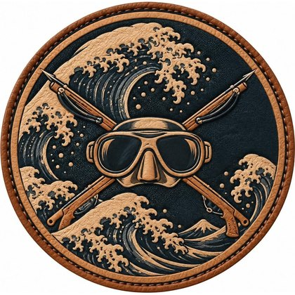

Dybde
0,0 m

Versjon 15.12g · kick i takt med finnene, hvit lapp
Tren dypdykk langs line. Får du godkjent et dykk dypere enn før, øker godkjent dybde. Da kan du jakte dypere, du får lengre dykketid og bedre utligning.
Velg dybde (scroll). Du kan melde opp til 4 meter dypere enn godkjent dybde.
1. Senk pulsen: du har 20 sekunder. Stryk fingeren opp og ned langs sporet i takt med den lyse kula – jevnt og rolig. Følger du kula, går pulsen ned. Rykk, raske drag eller å slippe gjør at den stiger. Jo lavere puls når dykket starter, jo mer luft har du.
2. Ned: du svømmer med joysticken og KICK! akkurat som når du jakter, med ditt eget utstyr. Du er festet til lina med en lanyard – svøm rett ned langs lina. Går du på skrå, drar lanyarden og du bruker mer luft. Når du er tung nok, synker du av deg selv (fritt fall) – slipp joysticken og spar luft.
3. Utlign: ørene fylles med trykk på vei ned. Trykk UTLIGN når måleren er i det grønne feltet. Venter du til den blir rød, får du vondt og må opp litt.
4. Munnfyll: under 22 meter fylles ørene mye raskere. Hold UTLIGN inne i ett sekund mellom 14 og 22 meter for å ta munnfyll.
5. Bunnen: trykk TA MERKET ved bunnplata, og svøm opp igjen langs lina. På vei opp sparker finnene i en fast takt. Trykk KICK! i takt med finnene, akkurat når de slår – da går det mye raskere og du bruker mindre luft. Trykker du i utakt, mister du farten.
6. Overflateprotokoll: i overflaten trykker du i riktig rekkefølge: Masken av → OK-tegn → «Jeg er OK». Feil rekkefølge eller for sent gir rødt kort.
Kort: hvitt = godkjent. Gult = du fikk ikke med merket. Rødt = blackout, samba eller feil protokoll.
Velg hvor du vil dykke. Nye plasser låses opp når du fyller kvoten.
Den største fisken du har skutt av hver art.
Et sted på bunnen ligger en kjempekveite. Den er for sterk for én harpun. Slipp harpunen, svøm opp til makkeren og hent hans, og sett skudd nummer to. Opp og pust, og dykk så ned igjen og dra den opp.
Har du kjøpt stor dykkerkniv, kan du i stedet trykke KNIV mens kveita drar deg. Da drar du deg innover lina og setter deg oppå den. Trykk så STIKK mange ganger til den er død. Det tar mye luft, så gjør det tidlig i dykket.
Tastatur: piltaster eller WASD, Shift for rolig svømming, L for å legge deg, G for å grynte, F for flasher, T for stringer, K for å kicke, mellomrom for å skyte.
| Art | Minstemål | Treffpoeng | Kvote |
|---|---|---|---|
| Torsk, lyr, sei | 45 cm | 1000 | 3 |
| Makrell | 35 cm | 1000 | 1 |
| Rødspette | 35 cm | 500 | 3 |
| Steinbit | 60 cm | 0 | 2 |
| Kveite | 80 cm | 0 | 1 |
| Sjøørret, hummer | Ikke lov med harpun: −1500 | ||
Runden varer fem minutter, eller til du har fylt kvoten på alle artene. Poengene følger vekta uten noe tak, så en kjempetorsk fra 25 meter er verdt mange ganger en vanlig fisk. Fisk under minstemål gir minuspoeng. Lengden vises når du er nær nok til å se fisken.
Mål og poeng er hentet fra Norges Dykkeforbunds konkurranseregler og forenklet. Sjekk Fiskeridirektoratets regler før ekte jakt, og dykk aldri alene.
Saldo: 0 kr